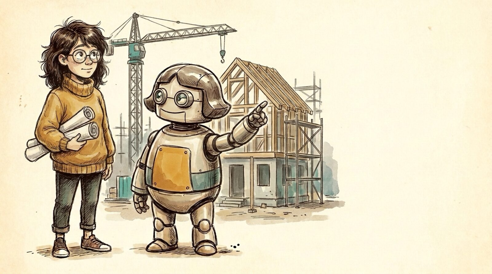

<section id="x01" data-transition="fade" style="background:#f5eee0">
  
  <p style="position:absolute; top:399.98px; left:1337.39px; width:720px; font-family:Arial, sans-serif; font-size:36px; font-weight:700; color:#c88a14">Appendix</p>
  <h1 style="position:absolute; top:450.39px; left:1337.4px; width:720px; font-family:Arial, sans-serif; font-size:84px; font-weight:700; line-height:1.1; color:#222222">Infra for the future</h1>
  <aside>Appendix, if there's time. If the house is the software, what does the construction site need? Two pieces of infrastructure we don't have yet.</aside>
</section>
